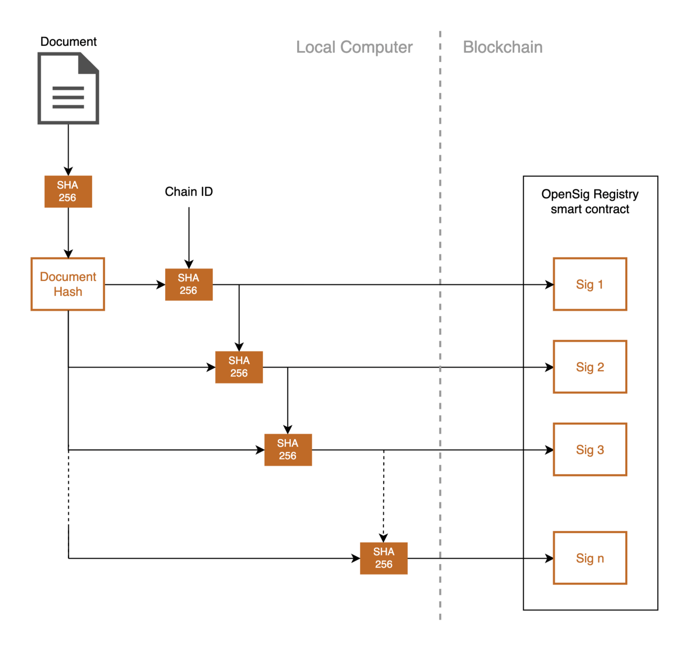

What is OpenSig?
OpenSig is a simple yet powerful app for notarising and digitally signing documents on EVM-based blockchains.
It's optional data field can be used to annotate each signature with a purpose, message, url or other data.
Privacy is paramount. Documents are never uploaded and signatures are not traceable without the original document. The optional signature data can be encrypted so that only users with the original document can read it.
OpenSig will always be open source. No account is necessary and multiple chains are supported. OpenSig does not charge for publishing signatures, you only pay the blockchain transaction fee.
Features
- Proof of Existence - signatures notarise the document on the blockchain providing secure proof that the document existed at the time the signature was published.
- Proof of Possession - signatures are linked to the signer's public address proving the signer possessed the document at the time of signing.
- Non-repudiable - the immutability of the blockchain ensures signatures cannot be repudiated.
- Annotations - a signature's optional data field can be used to annotate the signature with the purpose for signing, such as 'first draft' or 'approved for release'.
- Linkable - signatures can be linked to external files and urls through the optional signature data. Link to a Bubble or an IPFS content ID, for example.
Uses
- Digitally signing documents and contracts.
- Protecting your creations against future copyright challenges.
- Notarising public messages to the blockchain.
- Publishing public links to files on decentralised storage.
Supported Chains
- Ethereum mainnet
- Ethereum Sepolia testnet (add to metamask)
- BASE Goerli testnet (add to metamask)
More chains will be added over time. Join the discord server to request a specific network.
Known Public Notary Files
The following publicly available files are known to be used to notarise public messages to the blockchain. Join the discord server or email us to add another.
| File Description or URL | Purpose |
|---|---|
| Empty file | Public message board |
How it works
Signatures are SHA-256 hashes derived from the hash of the document and the previous signature, creating a chain of signatures unique to each document. The signature chain is deterministic provided the user is in possession of the original document. Without the original document signatures published to the blockchain cannot be linked to the document or to each other. With the original document signatures on the blockchain can be read and any encrypted data fields decrypted. To prevent replay attacks the chain of signatures derived from a document is different for each blockchain.
Signatures are registered with an OpenSig Registry contract on the blockchain. The registry ensures signatures can only be published once. There is exactly one registry per supported blockchain. Registering a signature generates an event log containing the block time, signatory, signature and user data. It is these event logs that are read when verifying a document.
The user data is optionally AES-GCM encrypted using the document hash as the private key.
License
OpenSig is open source software licensed under the MIT License.